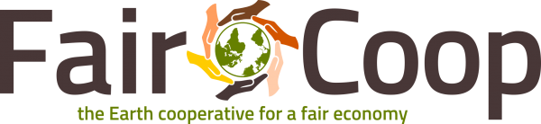

Presentación de FairCoop
Fecha
a definir (septiembre?)
Organizan
Cátedra Libre de Nuevas Economías (UNLP)
Dir. Pablo Gustavo Rodriguez
Cátedra Abierta Florial Gorini, Economía Popular y Solidaria (UNRC)
Dir. Luis Barovero
Agenda
- descentralización, P2P criptomoneda, economía social, sistema monetario, construcción de alternativas, formas de organizacion on line.
- ronda de preguntas
- break
- demo (taller)